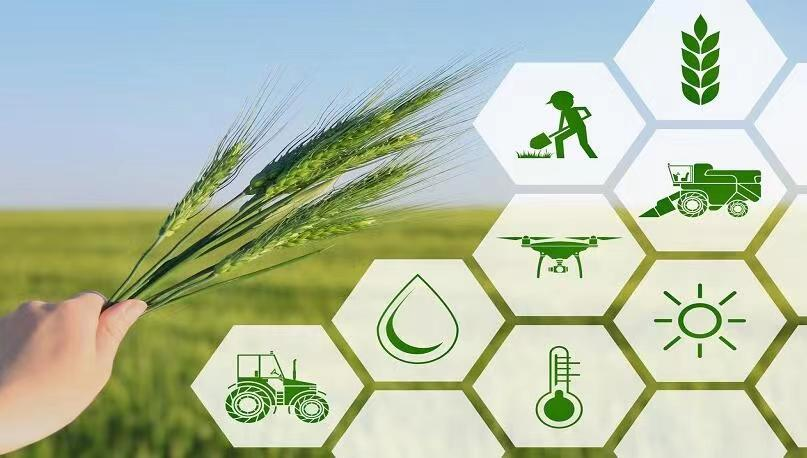

集团旗下的大富时供应链科技有限公司将致力于打造食品供应链业务，将在粤港澳大湾区核心区位的南沙自贸区投资打造全球优食未来聚合生态新平台。
依托南沙优越的营商环境和优质的政务服务，发挥南沙国际深水港和南沙综合保税港区高效低成本通关优势，通过在南沙建设集食品研发、加工、拍卖、仓储、分拨、集散、保税、检测检疫、交易、展览展示、直播于一体的优质食品供应链数字化产业集群，打造高标准、低碳环保和智能化管理的优质食品供应链数字化交易中心、澳门葡语系食品加工产业转移基地、广东省优质食品供港澳和供东南亚基地、国际食品直播和拍卖展示中心以及国际食品集散配送基地。
